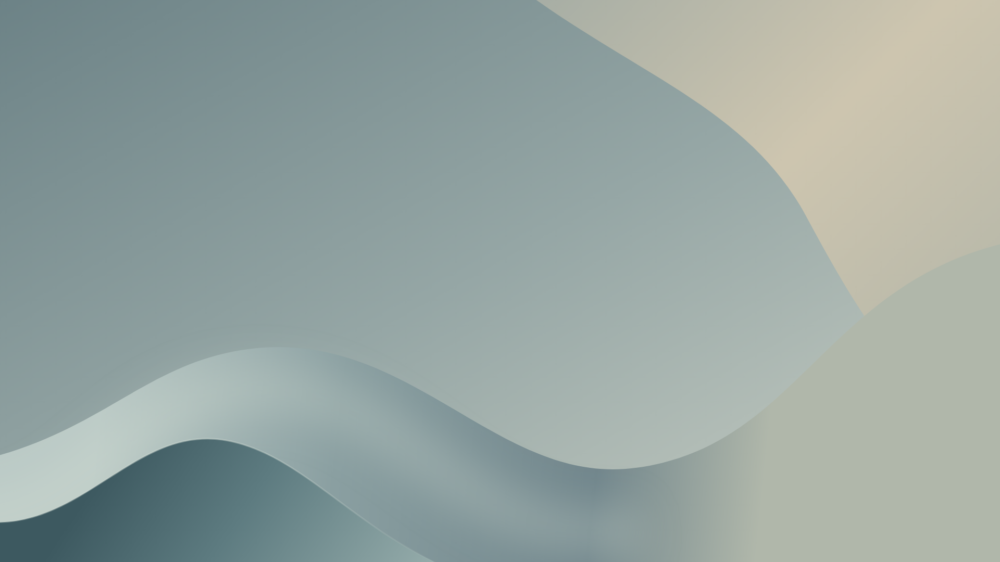
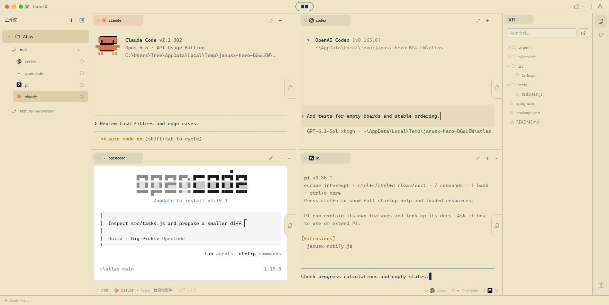
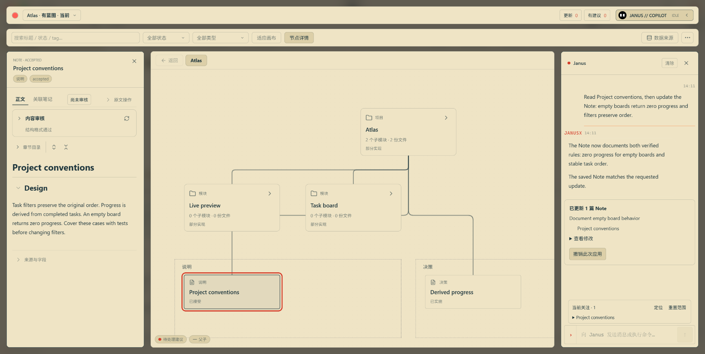

<!doctype html>
<html lang="en">
<meta charset="utf-8">
<meta name="viewport" content="width=device-width, initial-scale=1">
<title>JanusX workspace</title>
<!-- Actual application captures: four terminal panes with both sidebars open,
     plus a separate Blueprint workspace in the lower-right foreground.
     No added copy or simulated UI. Sources and capture details: brand-spec.md. -->
<style>
* { box-sizing: border-box; }
:root { --hero-background: #95a6a5; }
body { margin: 0; }
main { position: relative; width: 1920px; height: 1080px; background: var(--hero-background); }
img { display: block; height: auto; }
.backdrop { position: absolute; inset: 0; width: 1920px; height: 1080px; }
.workspace { position: absolute; top: 48px; left: 80px; width: 1760px;
  border: 1px solid rgb(255 255 255 / 48%);
  border-radius: 12px; box-shadow: 0 18px 42px rgb(30 47 50 / 24%); }
.blueprint { position: absolute; right: 32px; bottom: 28px; width: 856px;
  border: 1px solid rgb(255 255 255 / 64%);
  border-radius: 10px;
  box-shadow: 0 0 0 5px rgb(228 233 225 / 28%), 0 24px 54px rgb(30 47 50 / 32%); }
</style>
<main>
  
  
  
</main>
</html>
